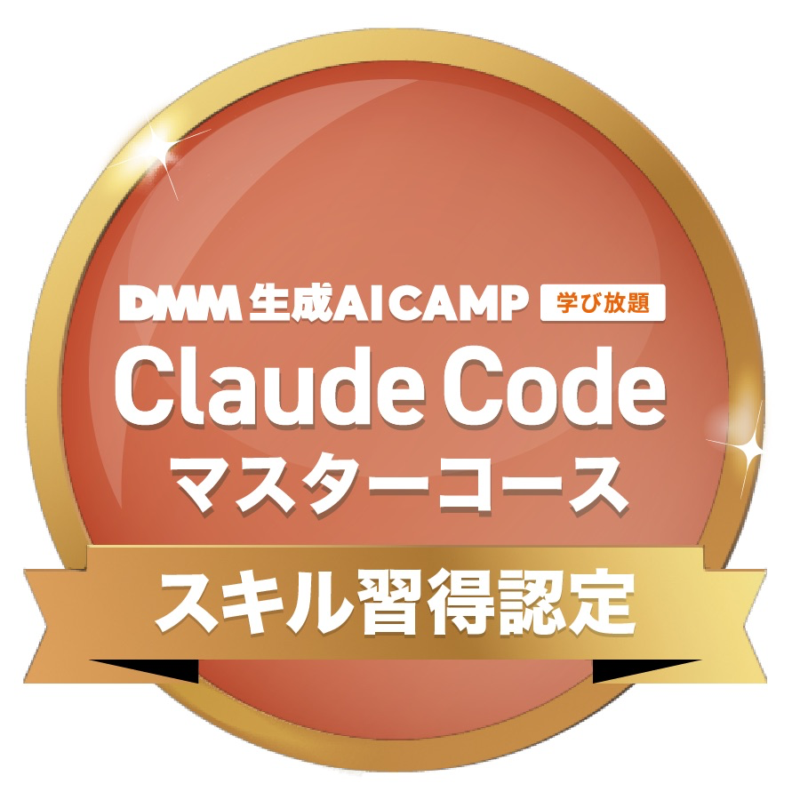

20年の事務経験 × 最新AI

改めまして、Sawa IT Create PartnerのSawaと申します。
私はこれまで20年以上にわたり、大手企業の最先端研究所や、
国立・私立大学といった「組織の実務の最前線」で、
バックオフィス全般を支え続けてきました。
世の中には便利なITツールやAIがあふれていますが、
本当に大切なのは技術そのものではなく、
「それを使って今目の前にある面倒な作業がどれだけラクになるか」
だと考えています。
「これ、自動化できる？」「こんなホームページ作れる？」という
ちょっとした疑問や思いつきで構いません。
パソコンが苦手な方も、どうぞ安心してお気軽にご相談ください。
一方的に「教える」のではなく、あなたの会社の頼れる一員として
「親身に寄り添い、一緒に仕組みを作る」。
それがSawa IT Create Partnerです。
選ばれる3つの理由
総務、人事、広報、経理、購買、イベント運営など、多岐にわたる実務を経験してきました。だからこそ、現場の「ここが不便」「これが自動化できたら嬉しい」という感覚を、誰よりもリアルに共有できます。
新しいシステムを無理に覚える必要はありません。勤怠管理やシフト表、損益集計など、普段お使いのExcelやLINEをそのまま連携。裏側でAIを賢く動かすことで、今まで何時間もかかっていた作業を「ボタンワンクリック」で終わらせる仕組みを作ります。
Web制作においても、AIを活用した最新の効率的プロセスを導入しています。デザインやクオリティには一切妥協せず、制作期間を大幅に短縮。地域に根差したビジネスを営むみなさまが導入しやすい「圧倒的にリーズナブルな費用」を実現しました。
教育出版社でのインストラクター業務からスタート。中学生への学習指導や電話対応、講習会の講師を担当。「専門的なことを、相手の目線に合わせて分かりやすく伝えること」「一人ひとりに親身に伴走すること」の原点を培いました。
国立大学・私立大学の運営現場をマルチにサポート。長年にわたり大学の研究センターや学習支援部門、翻訳事務局などで事務全般を担当。予算管理や施設のホームページ運用、各種データ集計など、バックオフィスの実務経験を深く積み上げました。
大手化学メーカーの研究所にて、業務効率化を推進。事務・秘書業務に従事しながら、社内Webサイトの構築や動画編集、Webセミナー事務局運営を手がける傍ら、「ExcelやGoogleツールを用いた自動化システム」を自ら提案・作成し、日々の業務時間を大幅に短縮する実績を多数構築しました。
新規店舗の起業コンサルティング会社にて、店舗運営をトータル支援。スタッフの勤怠管理やシフト表、損益集計などの経理事務、公式Instagramの運用代行、顧客管理システムの運用まで、街の店舗運営に直結するサポートをマルチに遂行しました。
地域密着の活動として、地元の自治会連合会様の公式Webサイトを制作・公開。パソコン操作やネット発信に不安を抱える地域の皆様に親身に寄り添い、誰でも簡単に運用できるホームページをカタチにしました。
最新の生成AI技術・最先端AI開発ツールのマスターコースを修了。これまで20年以上培ってきた「現場の事務経験」に「最新のAI技術」を掛け合わせ、より多くの地域の皆様に貢献するため、頼れるITパートナー「Sawa IT Create Partner」として本格始動。
HTML / CSS / JavaScript / WordPressを使ったサイト制作・デザインまで一貫対応。
Excel集計やルーティン作業をスクリプトやAIで自動化。日々の手間を減らします。

最先端のAI開発ツール「Claude Code」のマスターコースを修了。AI活用によるアプリ開発・業務自動化を実践。